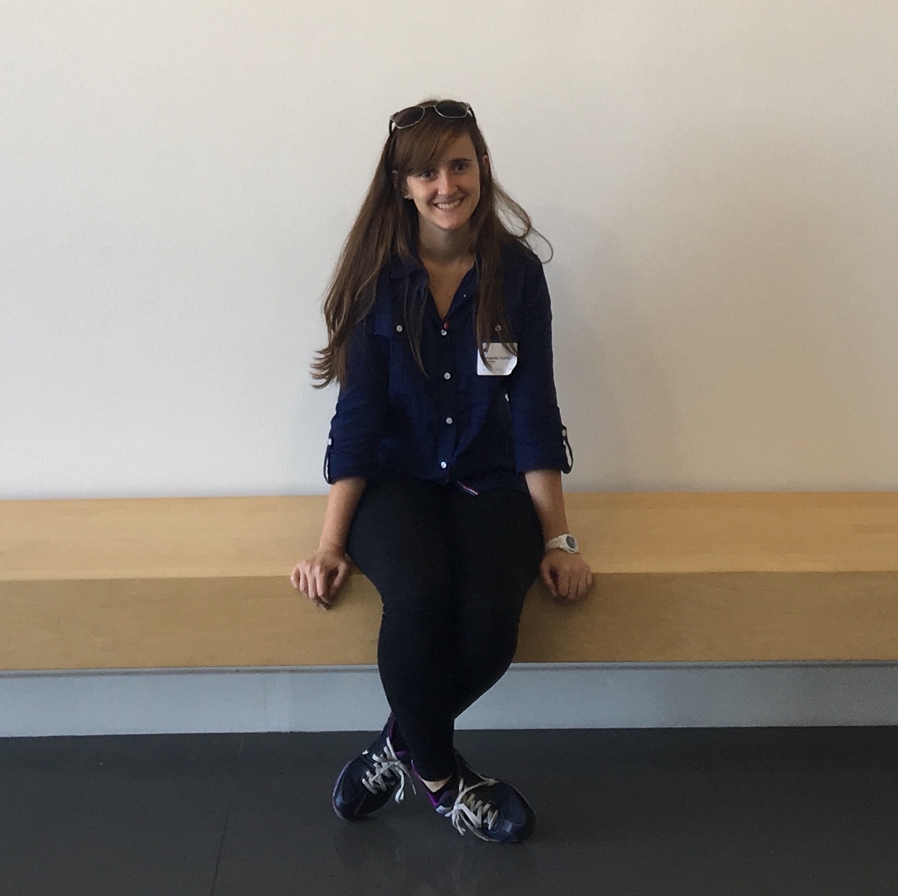

Amanda Aurita Araujo Fernandes
22 years - Brazilian
iOS,Web Developer and Programming Teacher
amanda.aurita.rj@gmail.com
22 years - Brazilian
iOS,Web Developer and Programming Teacher
amanda.aurita.rj@gmail.com
Passionate about technology and challenges, I was introduced to a "different world" when I decided to study telecommunication in high school.
In December of 2011, I finished high-school and became a Telecommunication Technician.
Today, I am finishing my undergraduate studies in Information Systems at PUC Rio and I love what I do!
I wad part of BEPiD Rio and I am always looking for something new to learn.
June 13-17
I won the WWDC 2016 scholarship and with that I won a ticket for the event!
It was a contest for students from all of the world and just 350 winners.
It was an amazing experience and I can't wait to come back next year!
November 9-10
I was selected to participate in the Hackathon Ambev in Sao Paulo, Brazil.
20 groups of 5 people each were given 24 hours to to develop applications to improve the customer experience with beverage consumer at home or in restaurants. Me and my group developed an iOS app. You can read more about it in Projects. You can read more about it in Projects.
December 11-13
I was selected to participate in the HackPUC that occured at PUC Rio.
20 groups of 5 people each were tasked with developping an app on Security, Sports, and/or Policy. My team and I built an iOS app on which users could bet on the results of the Olympic Games.
Bachelor's degree in Information Systems
03/2013 - Present
More information at PUC Rio site.
Telecommunication Technician
02/2009 - 12/2011
iOS Developer
11/2014 - 12/2015
This program is where I was first introduced to iOS development. I started with Objective-C, with which three colleagues and I built an education app for children. Following that project, I started learning Swift. I love it, so I've used it to build most of the apps I've made.
After that, still at the beginning of the project, I started learning swift. I loved this language, so I used to make the most apps that I have.
I also learned the CBL - Challenge Based Learning. You can read more about it here.
Telecommunication Technician (Trainee)
11/2012 - 03/2013
Activities: Maintenance and configuration of telephone exchanges software, network deployment and structured cabling in commercial buildings and residences , network certification.
Apps made in challenges at BEPiD
This app was made with more 2 people on a 2 week challenge with free theme. So, me and my team decided to do something that represent us: Music, Dance and Creativity. We think about an app that the user could come up with a choreography by moving your arms and then, the opponent will have to mimic your movements as best as he can.
This app was made in swift. We used the Core Motion Framework to capture the movements and the Av Foundation Framework for the music.
You can download the We Can Move app at the App Store.
This app was made with more 4 people on a 3 week challenge. It is an entertainment app to take pictures and make a timelapse with them.
How it works: You create an album, and take some pictures. The app will make for you a timelapse video and then you will be able to store on your iPhone and share with people.
This app was made in swift. We used the Core Data Framework to save the photos, EventKit, CoreGraphics and other Frameworks.
You can download the DayPic app at the App Store.
I made this app on a 3 day challenge at BEPiD. The theme was free, so I decided to make an app about my candy brand.
People can see my history, the candys that I sell and call me through the app.
You can download the TuttiDoces app at the App Store.
This is an iPad educational game for kids to learn how to recycle.
This app was made in objective-c and this was my first iOS app.
How it works: In each level you can see a lot of trash inside the scenario. You have to select each of them and drag to the correct trash can.
This was the app I made at Ambev Hackathon.
This hachathon was like a startup weekend. So we had to think about a problem, validate the problem, develop a solution and then validade the solution.
Me and my team developed an iOs App in swift called Cerva-se. With it you don`t need wait for a waiter at a restaurante. You can just choose the drink you want, pay with the app and get your drink (beer) with an QRCode.
This app was my final project at BEPiD and I made it with 3 more people.
The idea of this app is to schedule surgery. You have to fill up the surgery form and send to the Hospital.
We mad this app with swift. We used Core Data and the PostgreSQL Database to send the data to the web server. We used PHP on the server side.
These are the projects I made in some subjects at school
This project I developed on the INF1405 - Systems Development subject where I had to choose a system do model and developed. So I decided to make a WEB project for the MOC app that I had developed at BEPiD.
This is a schedule surgery system with two WEB sites, one for the hospital and another for the doctors.
The doctor fill up the surgery form and send to the hospital. The hospital can change the status and accept or not the surgery.
I made this system with HTML, CSS/Bootstrap, Java Script, MeteorJS Framework and MongoDB.
I made this project on the INF1301 - Modular Programming subject where I had to develop the entire WAR Game for desktop in Java.
You have to choose a minimum of three players. The game will give to you the order and then, when you start the game, it will give randomically the territories and the goal for each player. The circles are the armies. All the rules were implemented: The first round, each player choose where to put the armies; From the second level, the player can attack order player in order to conquer a territory; The dice were implemented and the territories card too.
Brazilian - 1994/02/27
C: +55 21 987306920
E-mail: amanda.aurita.rj@gmail.com
Linkedin: www.linkedin.com/in/amandaaurita
Github: https://github.com/amandaaurita
2013 - 2017
Rio de Janeiro - Rio de Janeiro, Brazil
2009 - 2011
Rio de Janeiro - Rio de Janeiro, Brazil
November 2014 to December 2015
Rio de Janeiro - Rio de Janeiro
Mobile development with Objective-C and Swift. 3 apps published on the AppStore.
November 2012 to March 2013
Rio de Janeiro - Rio de Janeiro, Brazil
Maintenance and configuration of telephone exchanges software, network deployment and structured cabling in commercial buildings and residences , network certification.